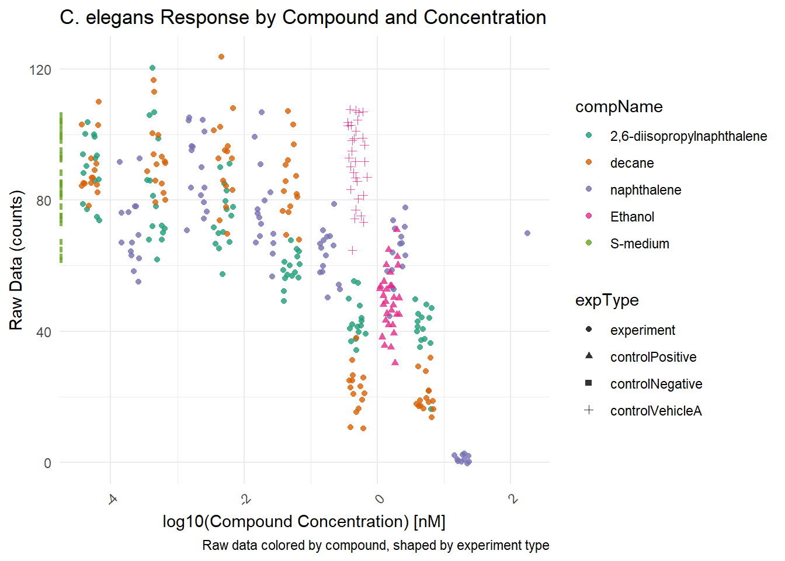

5 C.Elegans Plate experiment
Question A: “Review the following Excel file in the ./data/CE.LIQ.FLOW.062_Tidydata.xlsx, by opening the file in Excel. See if you can spot anything peculiar about this file. Do not edit the file in any way. Just close it when you are done. (Annoyingly, Excel asks you to save your changes, even if you did not touch anything in the file.)” A: Parameters tab is unclear what colomn means what. There is a ‘Raw data’ column, what does this mean and what is it for? Also would be nice to have some explanation on all the colours and why does the pink column run down so far. The other tabs are even more unclear its hard to find where things are and even more hard to find what it means.
Question B: “Open the file in R, using the {readxl} package.” Question C: “Inspect the data types of columns RawData, compName and compConcentration. What types would you expect from the experimental description above. Have the data types been correctly assigned during the importing of the data into R?”
C:
## here() starts at C:/Users/WASun/Documents/Portfolio-AlexS## ── Attaching core tidyverse packages ──────────────────────────────── tidyverse 2.0.0 ──
## ✔ dplyr 1.1.4 ✔ readr 2.1.5
## ✔ forcats 1.0.0 ✔ stringr 1.5.1
## ✔ ggplot2 3.5.1 ✔ tibble 3.2.1
## ✔ lubridate 1.9.3 ✔ tidyr 1.3.1
## ✔ purrr 1.0.2## ── Conflicts ────────────────────────────────────────────────── tidyverse_conflicts() ──
## ✖ dplyr::filter() masks stats::filter()
## ✖ dplyr::lag() masks stats::lag()
## ℹ Use the conflicted package (<http://conflicted.r-lib.org/>) to force all conflicts to become errorslibrary(readxl)
CElegans_data <- read_excel(here::here("Data", "CE.LIQ.FLOW.062_Tidydata.xlsx"))
head(CElegans_data)## # A tibble: 6 × 34
## plateRow plateColumn vialNr dropCode expType expReplicate expName
## <lgl> <lgl> <dbl> <chr> <chr> <dbl> <chr>
## 1 NA NA 1 a experiment 3 CE.LIQ.FLOW.062
## 2 NA NA 1 b experiment 3 CE.LIQ.FLOW.062
## 3 NA NA 1 c experiment 3 CE.LIQ.FLOW.062
## 4 NA NA 1 d experiment 3 CE.LIQ.FLOW.062
## 5 NA NA 1 e experiment 3 CE.LIQ.FLOW.062
## 6 NA NA 2 a experiment 3 CE.LIQ.FLOW.062
## # ℹ 27 more variables: expDate <dttm>, expResearcher <chr>, expTime <dbl>,
## # expUnit <chr>, expVolumeCounted <dbl>, RawData <dbl>, compCASRN <chr>,
## # compName <chr>, compConcentration <chr>, compUnit <chr>,
## # compDelivery <chr>, compVehicle <chr>, elegansStrain <chr>,
## # elegansInput <dbl>, bacterialStrain <chr>, bacterialTreatment <chr>,
## # bacterialOD600 <dbl>, bacterialConcX <dbl>, bacterialVolume <dbl>,
## # bacterialVolUnit <chr>, incubationVial <chr>, incubationVolume <dbl>, …Question D:“Create a graph displaying a scatterplot for the CE.LIQ.FLOW.062_Tidydata.xlsx data, for the different compounds and the varying concentrations. Put the compConcentration on the x-axis, the DataRaw counts on the y-axis and assign a colour to each level in compName. Assign a different symbol (shape =) to each level in the expType variable. Try fixing the labels of the x-axis so that we can read them.”
library(ggplot2)
library(tidyverse)
# chr to factor conversion
CElegans_data$compName <- factor(CElegans_data$compName, levels = unique(CElegans_data$compName))
CElegans_data$expType <- factor(CElegans_data$expType, levels = unique(CElegans_data$expType))
CElegans_data$compConcentration <- parse_number(CElegans_data$compConcentration)
# checking the conversion to factor
levels(CElegans_data$compName)## [1] "2,6-diisopropylnaphthalene" "decane"
## [3] "naphthalene" "Ethanol"
## [5] "S-medium"## [1] "experiment" "controlPositive" "controlNegative" "controlVehicleA"## tibble [360 × 34] (S3: tbl_df/tbl/data.frame)
## $ plateRow : logi [1:360] NA NA NA NA NA NA ...
## $ plateColumn : logi [1:360] NA NA NA NA NA NA ...
## $ vialNr : num [1:360] 1 1 1 1 1 2 2 2 2 2 ...
## $ dropCode : chr [1:360] "a" "b" "c" "d" ...
## $ expType : Factor w/ 4 levels "experiment","controlPositive",..: 1 1 1 1 1 1 1 1 1 1 ...
## $ expReplicate : num [1:360] 3 3 3 3 3 3 3 3 3 3 ...
## $ expName : chr [1:360] "CE.LIQ.FLOW.062" "CE.LIQ.FLOW.062" "CE.LIQ.FLOW.062" "CE.LIQ.FLOW.062" ...
## $ expDate : POSIXct[1:360], format: "2020-11-30" "2020-11-30" ...
## $ expResearcher : chr [1:360] "Sergio Reijnders - Ellis Herder" "Sergio Reijnders - Ellis Herder" "Sergio Reijnders - Ellis Herder" "Sergio Reijnders - Ellis Herder" ...
## $ expTime : num [1:360] 68 68 68 68 68 68 68 68 68 68 ...
## $ expUnit : chr [1:360] "hour" "hour" "hour" "hour" ...
## $ expVolumeCounted : num [1:360] 50 50 50 50 50 50 50 50 50 50 ...
## $ RawData : num [1:360] 44 37 45 47 41 35 41 36 40 38 ...
## $ compCASRN : chr [1:360] "24157-81-1" "24157-81-1" "24157-81-1" "24157-81-1" ...
## $ compName : Factor w/ 5 levels "2,6-diisopropylnaphthalene",..: 1 1 1 1 1 1 1 1 1 1 ...
## $ compConcentration : num [1:360] 4.99 4.99 4.99 4.99 4.99 4.99 4.99 4.99 4.99 4.99 ...
## $ compUnit : chr [1:360] "nM" "nM" "nM" "nM" ...
## $ compDelivery : chr [1:360] "Liquid" "Liquid" "Liquid" "Liquid" ...
## $ compVehicle : chr [1:360] "controlVehicleA" "controlVehicleA" "controlVehicleA" "controlVehicleA" ...
## $ elegansStrain : chr [1:360] "N2" "N2" "N2" "N2" ...
## $ elegansInput : num [1:360] 25 25 25 25 25 25 25 25 25 25 ...
## $ bacterialStrain : chr [1:360] "OP50" "OP50" "OP50" "OP50" ...
## $ bacterialTreatment : chr [1:360] "heated" "heated" "heated" "heated" ...
## $ bacterialOD600 : num [1:360] 0.743 0.743 0.743 0.743 0.743 0.743 0.743 0.743 0.743 0.743 ...
## $ bacterialConcX : num [1:360] 8 8 8 8 8 8 8 8 8 8 ...
## $ bacterialVolume : num [1:360] 300 300 300 300 300 300 300 300 300 300 ...
## $ bacterialVolUnit : chr [1:360] "ul" "ul" "ul" "ul" ...
## $ incubationVial : chr [1:360] "1,5 glass vial" "1,5 glass vial" "1,5 glass vial" "1,5 glass vial" ...
## $ incubationVolume : num [1:360] 1000 1000 1000 1000 1000 1000 1000 1000 1000 1000 ...
## $ incubationUnit : chr [1:360] "ul" "ul" "ul" "ul" ...
## $ incubationMethod : chr [1:360] "rockroll" "rockroll" "rockroll" "rockroll" ...
## $ incubationRPM : num [1:360] 35 35 35 35 35 35 35 35 35 35 ...
## $ bubble : logi [1:360] NA NA NA NA NA NA ...
## $ incubateTemperature: num [1:360] 20 20 20 20 20 20 20 20 20 20 ...# Plotting the scatterplot with dynamic shape assignment
ggplot(CElegans_data, aes(x = log10(compConcentration), y = RawData)) +
geom_point(aes(color = compName, shape = expType), size = 1.5, alpha = 0.8, position = position_jitter(width = 0.15)) +
labs(title = "CE.LIQ", caption = "think of a caption",x = " Log10 Compound Concentration", y = "DataRaw Counts") +
theme_minimal() +
theme(axis.text.x = element_text(angle = 45, hjust = 1))## Warning: Removed 5 rows containing missing values or values outside the scale range
## (`geom_point()`). Question E: “When creating the plot under C), what happened with the ordering of the x-axis labels. Explain why this happens. Look at the data-type of the compConcentration column in the data again to find a clue.” The x-axis labels overlap, you need to angle them slightly so all labels are readable.